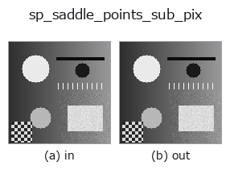

subpix op• データ種: image → contour
• 呼び出し: fullseye.apply(img, "sp_saddle_points_sub_pix", a=0.5, b=0.5) (2-D は 1 画像 + 2 スカラつまみ a,b∈[0,1] のモデル)
• HALCON 相当: saddle_points_sub_pix(意味・パラメータは HALCON リファレンスが参考になる)

*図は合成の入力 128×128 で実際に走らせた出力。左が入力、右が出力。点群は上から見た散布(明るさ = z)、1-D 列は折れ線、体積は z 方向の最大値投影、動画は中央フレーム、複素画像は振幅、絵にならない返り値は値そのもの。*
つまみ a を振る(0.1 / 0.5 / 0.9、もう一方は既定):
▸ sp_saddle_points_sub_pix: knob a sweep (docs site)
*つまみ b は出力を変えない(実測: 0.1 / 0.5 / 0.9 で同一)。*
別の画像でも(合成シーン / 写真 / 硬貨。上段が入力、下段がその出力。つまみは既定):
▸ sp_saddle_points_sub_pix: other inputs (docs site)
*4 列目はカラー (H,W,3) の入力。この op は色を跨がずに扱える(色チャネルを 3 本目の空間軸として畳み込まない)。*
グレー値曲面の鞍点（サドルポイント）をサブピクセル精度で検出する（HALCON `saddle_points_sub_pix` に相当）。
3x3 の 2 次曲面フィットのヘッセ行列が不定符号（`det H < 0、両主曲率の符号が逆）になる画素を鞍点候補とし、勾配 0 点がセル内（|dx|,|dy| <= 0.5）に収まるものだけを残す。a は鞍点の強さ（より小さい方の主曲率の絶対値）のしきい値を 1e-4〜0.0201 に振る（thr = 1e-4 + 0.02*a）。b` は未使用。戻り値は CONTOUR、座標の単位は入力画像のピクセル。
• measurement_uncertainty — 計測の不確かさと校正の知識 — 「測れている」を主張するために
• サンプルデータ カタログ(DL URL / ライセンス) — 2-D は skimage.data(BSD/public)+ 合成、3-D は実データ源(Stanford/PDS 等)の DL URL。
• 演算子の来歴・参考文献 — この op 族の元になった研究/手法の出典。
• アルゴリズムの正典(著者・年)と用途は上記ファミリ使い方ガイドに記載。
下のプログラムは実際に走ることを確かめてある(図と同じ入力)。Studio のヘルプではこのブロックがボタンになり、その場で読み込んで実行できる。
sp_saddle_points_sub_pix 0.50 0.50
▸ Load this pipeline · Load & run
• gallery2d_geometry — py -3.11 examples/gallery2d_geometry.py
contour を入力に取れる)identity · select_contours · smooth_contours · fit_line_contours · contours_to_region · count_contours · total_length · select_contours_xld
subpix)sp_local_max_sub_pix · sp_local_min_sub_pix · sp_critical_points_sub_pix · sp_plateaus · sp_lowlands_center
*Provenance: ops.py — 2D operator registry. この per-op ノートは tools/opdocs.py md が自動生成(手編集しない)。*
© 2026 Kazufumi Furuse — Fullseye operator documentation. Licensed under Apache-2.0.
{kind=link}
{kind=link}